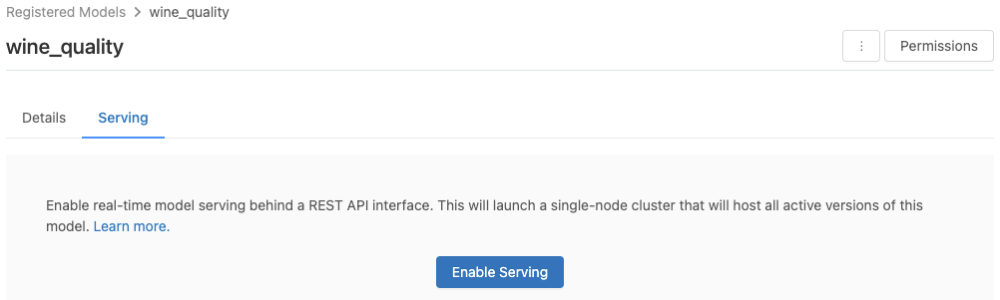

Legacy MLflow Model Serving on Databricks
Preview
This feature is in Public Preview.
Important
This documentation has been retired and might not be updated. The products, services, or technologies mentioned in this content are no longer supported.
The guidance in this article is for Legacy MLflow Model Serving. Databricks recommends you migrate your model serving workflows to Model Serving for the enhanced model endpoint deployment and scalability. For more information, see Model serving with Databricks.
Legacy MLflow Model Serving allows you to host machine learning models from Model Registry as REST endpoints that are updated automatically based on the availability of model versions and their stages. It uses a single-node cluster that runs under your own account within what is now called the classic compute plane. This compute plane includes the virtual network and its associated compute resources such as clusters for notebooks and jobs, pro and classic SQL warehouses, and Legacy model serving endpoints.
When you enable model serving for a given registered model, Databricks automatically creates a unique cluster for the model and deploys all non-archived versions of the model on that cluster. Databricks restarts the cluster if an error occurs and terminates the cluster when you disable model serving for the model. Model serving automatically syncs with Model Registry and deploys any new registered model versions. Deployed model versions can be queried with a standard REST API request. Databricks authenticates requests to the model using its standard authentication.
While this service is in preview, Databricks recommends its use for low throughput and non-critical applications. Target throughput is 200 qps and target availability is 99.5%, although no guarantee is made as to either. Additionally, there is a payload size limit of 16 MB per request.
Each model version is deployed using MLflow model deployment and runs in a Conda environment specified by its dependencies.
Note
The cluster is maintained as long as serving is enabled, even if no active model version exists. To terminate the serving cluster, disable model serving for the registered model.
The cluster is considered an all-purpose cluster, subject to all-purpose workload pricing.
Global init scripts are not run on model serving clusters.
Important
Anaconda Inc. updated their terms of service for anaconda.org channels. Based on the new terms of service you may require a commercial license if you rely on Anaconda’s packaging and distribution. See Anaconda Commercial Edition FAQ for more information. Your use of any Anaconda channels is governed by their terms of service.
MLflow models logged before v1.18 (Databricks Runtime 8.3 ML or earlier) were by default logged with the conda defaults channel (https://repo.anaconda.com/pkgs/) as a dependency. Because of this license change, Databricks has stopped the use of the defaults channel for models logged using MLflow v1.18 and above. The default channel logged is now conda-forge, which points at the community managed https://conda-forge.org/.
If you logged a model before MLflow v1.18 without excluding the defaults channel from the conda environment for the model, that model may have a dependency on the defaults channel that you may not have intended.
To manually confirm whether a model has this dependency, you can examine channel value in the conda.yaml file that is packaged with the logged model. For example, a model’s conda.yaml with a defaults channel dependency may look like this:
channels:
- defaults
dependencies:
- python=3.8.8
- pip
- pip:
- mlflow
- scikit-learn==0.23.2
- cloudpickle==1.6.0
name: mlflow-env
Because Databricks can not determine whether your use of the Anaconda repository to interact with your models is permitted under your relationship with Anaconda, Databricks is not forcing its customers to make any changes. If your use of the Anaconda.com repo through the use of Databricks is permitted under Anaconda’s terms, you do not need to take any action.
If you would like to change the channel used in a model’s environment, you can re-register the model to the model registry with a new conda.yaml. You can do this by specifying the channel in the conda_env parameter of log_model().
For more information on the log_model() API, see the MLflow documentation for the model flavor you are working with, for example, log_model for scikit-learn.
For more information on conda.yaml files, see the MLflow documentation.
Requirements
Legacy MLflow Model Serving is available for Python MLflow models. You must declare all model dependencies in the conda environment. See Log model dependencies.
To enable Model Serving, you must have cluster creation permission.
Model serving from Model Registry
Model serving is available in Databricks from Model Registry.
Enable and disable model serving
You enable a model for serving from its registered model page.
Click the Serving tab. If the model is not already enabled for serving, the Enable Serving button appears.
Click Enable Serving. The Serving tab appears with Status shown as Pending. After a few minutes, Status changes to Ready.
To disable a model for serving, click Stop.
Validate model serving
From the Serving tab, you can send a request to the served model and view the response.
Model version URIs
Each deployed model version is assigned one or several unique URIs. At minimum, each model version is assigned a URI constructed as follows:
<databricks-instance>/model/<registered-model-name>/<model-version>/invocations
For example, to call version 1 of a model registered as iris-classifier, use this URI:
https://<databricks-instance>/model/iris-classifier/1/invocations
You can also call a model version by its stage. For example, if version 1 is in the Production stage, it can also be scored using this URI:
https://<databricks-instance>/model/iris-classifier/Production/invocations
The list of available model URIs appears at the top of the Model Versions tab on the serving page.
Manage served versions
All active (non-archived) model versions are deployed, and you can query them using the URIs. Databricks automatically deploys new model versions when they are registered, and automatically removes old versions when they are archived.
Note
All deployed versions of a registered model share the same cluster.
Manage model access rights
Model access rights are inherited from the Model Registry. Enabling or disabling the serving feature requires ‘manage’ permission on the registered model. Anyone with read rights can score any of the deployed versions.
Score deployed model versions
To score a deployed model, you can use the UI or send a REST API request to the model URI.
Score via UI
This is the easiest and fastest way to test the model. You can insert the model input data in JSON format and click Send Request. If the model has been logged with an input example (as shown in the graphic above), click Load Example to load the input example.
Score via REST API request
You can send a scoring request through the REST API using standard Databricks authentication. The examples below demonstrate authentication using a personal access token with MLflow 1.x.
Note
As a security best practice when you authenticate with automated tools, systems, scripts, and apps, Databricks recommends that you use OAuth tokens.
If you use personal access token authentication, Databricks recommends using personal access tokens belonging to service principals instead of workspace users. To create tokens for service principals, see Manage tokens for a service principal.
Given a MODEL_VERSION_URI like https://<databricks-instance>/model/iris-classifier/Production/invocations (where <databricks-instance> is the name of your Databricks instance) and a Databricks REST API token called DATABRICKS_API_TOKEN, the following examples show how to query a served model:
The following examples reflect the scoring format for models created with MLflow 1.x. If you prefer to use MLflow 2.0, you need to update your request payload format.
Snippet to query a model accepting dataframe inputs.
curl -X POST -u token:$DATABRICKS_API_TOKEN $MODEL_VERSION_URI \
-H 'Content-Type: application/json' \
-d '[
{
"sepal_length": 5.1,
"sepal_width": 3.5,
"petal_length": 1.4,
"petal_width": 0.2
}
]'
Snippet to query a model accepting tensor inputs. Tensor inputs should be formatted as described in TensorFlow Serving’s API docs.
curl -X POST -u token:$DATABRICKS_API_TOKEN $MODEL_VERSION_URI \
-H 'Content-Type: application/json' \
-d '{"inputs": [[5.1, 3.5, 1.4, 0.2]]}'
import numpy as np
import pandas as pd
import requests
def create_tf_serving_json(data):
return {'inputs': {name: data[name].tolist() for name in data.keys()} if isinstance(data, dict) else data.tolist()}
def score_model(model_uri, databricks_token, data):
headers = {
"Authorization": f"Bearer {databricks_token}",
"Content-Type": "application/json",
}
data_json = data.to_dict(orient='records') if isinstance(data, pd.DataFrame) else create_tf_serving_json(data)
response = requests.request(method='POST', headers=headers, url=model_uri, json=data_json)
if response.status_code != 200:
raise Exception(f"Request failed with status {response.status_code}, {response.text}")
return response.json()
# Scoring a model that accepts pandas DataFrames
data = pd.DataFrame([{
"sepal_length": 5.1,
"sepal_width": 3.5,
"petal_length": 1.4,
"petal_width": 0.2
}])
score_model(MODEL_VERSION_URI, DATABRICKS_API_TOKEN, data)
# Scoring a model that accepts tensors
data = np.asarray([[5.1, 3.5, 1.4, 0.2]])
score_model(MODEL_VERSION_URI, DATABRICKS_API_TOKEN, data)
You can score a dataset in Power BI Desktop using the following steps:
Open dataset you want to score.
Go to Transform Data.
Right-click in the left panel and select Create New Query.
Go to View > Advanced Editor.
Replace the query body with the code snippet below, after filling in an appropriate
DATABRICKS_API_TOKENandMODEL_VERSION_URI.(dataset as table ) as table => let call_predict = (dataset as table ) as list => let apiToken = DATABRICKS_API_TOKEN, modelUri = MODEL_VERSION_URI, responseList = Json.Document(Web.Contents(modelUri, [ Headers = [ #"Content-Type" = "application/json", #"Authorization" = Text.Format("Bearer #{0}", {apiToken}) ], Content = Json.FromValue(dataset) ] )) in responseList, predictionList = List.Combine(List.Transform(Table.Split(dataset, 256), (x) => call_predict(x))), predictionsTable = Table.FromList(predictionList, (x) => {x}, {"Prediction"}), datasetWithPrediction = Table.Join( Table.AddIndexColumn(predictionsTable, "index"), "index", Table.AddIndexColumn(dataset, "index"), "index") in datasetWithPrediction
Name the query with your desired model name.
Open the advanced query editor for your dataset and apply the model function.
Monitor served models
The serving page displays status indicators for the serving cluster as well as individual model versions.
To inspect the state of the serving cluster, use the Model Events tab, which displays a list of all serving events for this model.
To inspect the state of a single model version, click the Model Versions tab and scroll to view the Logs or Version Events tabs.
Customize the serving cluster
To customize the serving cluster, use the Cluster Settings tab on the Serving tab .
To modify the memory size and number of cores of a serving cluster, use the Instance Type drop-down menu to select the desired cluster configuration. When you click Save, the existing cluster is terminated and a new cluster is created with the specified settings.
To add a tag, type the name and value in the Add Tag fields and click Add.
To edit or delete an existing tag, click one of the icons in the Actions column of the Tags table.
Feature store integration
Legacy model serving can automatically look up feature values from published online stores.
.. aws:
Databricks Legacy MLflow Model Serving supports automatic feature lookup from these online stores:
- Amazon DynamoDB (v0.3.8 and above)
- Amazon Aurora (MySQL-compatible)
- Amazon RDS MySQL
.. azure::
Databricks Legacy MLflow Model Serving supports automatic feature lookup from these online stores:
- Azure Cosmos DB (v0.5.0 and above)
- Azure Database for MySQL
Known errors
ResolvePackageNotFound: pyspark=3.1.0
This error can occur if a model depends on pyspark and is logged using Databricks Runtime 8.x.
If you see this error, specify the pyspark version explicitly when logging the model, using
the `conda_env` parameter.
Unrecognized content type parameters: format
This error can occur as a result of the new MLflow 2.0 scoring protocol format. If you are seeing this error, you are likely using an outdated scoring request format. To resolve the error, you can:
Update your scoring request format to the latest protocol.
Note
The following examples reflect the scoring format introduced in MLflow 2.0. If you prefer to use MLflow 1.x, you can modify your
log_model()API calls to include the desired MLflow version dependency in theextra_pip_requirementsparameter. Doing so ensures the appropriate scoring format is used.mlflow.<flavor>.log_model(..., extra_pip_requirements=["mlflow==1.*"])
Query a model accepting pandas dataframe inputs.
curl -X POST -u token:$DATABRICKS_API_TOKEN $MODEL_VERSION_URI \ -H 'Content-Type: application/json' \ -d '{ "dataframe_records": [{"sepal_length (cm)": 5.1, "sepal_width (cm)": 3.5, "petal_length (cm)": 1.4, "petal_width": 0.2}, {"sepal_length (cm)": 4.2, "sepal_width (cm)": 5.0, "petal_length (cm)": 0.8, "petal_width": 0.5}] }'
Query a model accepting tensor inputs. Tensor inputs should be formatted as described in TensorFlow Serving’s API docs.
curl -X POST -u token:$DATABRICKS_API_TOKEN $MODEL_VERSION_URI \ -H 'Content-Type: application/json' \ -d '{"inputs": [[5.1, 3.5, 1.4, 0.2]]}'
import numpy as np import pandas as pd import requests def create_tf_serving_json(data): return {'inputs': {name: data[name].tolist() for name in data.keys()} if isinstance(data, dict) else data.tolist()} def score_model(model_uri, databricks_token, data): headers = { "Authorization": f"Bearer {databricks_token}", "Content-Type": "application/json", } data_dict = {'dataframe_split': data.to_dict(orient='split')} if isinstance(data, pd.DataFrame) else create_tf_serving_json(data) data_json = json.dumps(data_dict) response = requests.request(method='POST', headers=headers, url=model_uri, json=data_json) if response.status_code != 200: raise Exception(f"Request failed with status {response.status_code}, {response.text}") return response.json() # Scoring a model that accepts pandas DataFrames data = pd.DataFrame([{ "sepal_length": 5.1, "sepal_width": 3.5, "petal_length": 1.4, "petal_width": 0.2 }]) score_model(MODEL_VERSION_URI, DATABRICKS_API_TOKEN, data) # Scoring a model that accepts tensors data = np.asarray([[5.1, 3.5, 1.4, 0.2]]) score_model(MODEL_VERSION_URI, DATABRICKS_API_TOKEN, data)
You can score a dataset in Power BI Desktop using the following steps:
Open dataset you want to score.
Go to Transform Data.
Right-click in the left panel and select Create New Query.
Go to View > Advanced Editor.
Replace the query body with the code snippet below, after filling in an appropriate
DATABRICKS_API_TOKENandMODEL_VERSION_URI.(dataset as table ) as table => let call_predict = (dataset as table ) as list => let apiToken = DATABRICKS_API_TOKEN, modelUri = MODEL_VERSION_URI, responseList = Json.Document(Web.Contents(modelUri, [ Headers = [ #"Content-Type" = "application/json", #"Authorization" = Text.Format("Bearer #{0}", {apiToken}) ], Content = Json.FromValue(dataset) ] )) in responseList, predictionList = List.Combine(List.Transform(Table.Split(dataset, 256), (x) => call_predict(x))), predictionsTable = Table.FromList(predictionList, (x) => {x}, {"Prediction"}), datasetWithPrediction = Table.Join( Table.AddIndexColumn(predictionsTable, "index"), "index", Table.AddIndexColumn(dataset, "index"), "index") in datasetWithPrediction
Name the query with your desired model name.
Open the advanced query editor for your dataset and apply the model function.
If your scoring request uses the MLflow client, like
mlflow.pyfunc.spark_udf(), upgrade your MLflow client to version 2.0 or higher to use the latest format. Learn more about the updated MLflow Model scoring protocol in MLflow 2.0.
For more information about input data formats accepted by the server (for example, pandas split-oriented format), see the MLflow documentation.